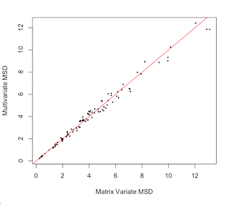
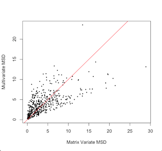

A Short Guide for MatrixVariate
Installation
To download the package simply run
add https://github.com/nikpocuca/MatrixVariate.jlin pkg mode within a julia repl.
Features
MatrixNormTest
A simple framework for assessing the matrix variate normality of data.
 
Main Test
The function for the main test of matrix variate normality in a dataset.
- X is an r x c x N array.
- α is the significance level.
- iter is the number of mle iterations for the matrix variate MLE estimate.
MatrixVariate.MatVTest — Method.MatVTest(X::Array{Float64,3};α::Float64 = 0.05,iter::Int64 = 100)
# MAIN Matrix Variate Normal Test function.
# X is an r x c x N array.
# α is significance level.
# iter is the number of mle iterations for the matrix variate MLE estimate.Plotting and Summary
DD plot function, that takes in a MatrixNormTest object and plots the distances along the reference line.
MatrixVariate.ddplot — Method.ddplot(mat_test::MatrixVariateNormalTest)An Example
using RCall, MatrixVariate
# example data function
mat_data = MatrixVariate.example_data();
X_A = mat_data[1];
X_B = mat_data[2];
# Matrix Variate Normality
mtest_A = MatVTest(X_A);
print(mtest_A.ks_test);
ddplot(mtest_A);
# Failure of Matrix Variate Noramlity
mtest_B = MatVTest(X_B);
print(mtest_B.ks_test);
ddplot(mtest_B);
Objects
MatrixVariateNormalTest object
An object that contains all necessary information for a matrix variate normality test
- matrix distances, d_mat
- multivariate distances, d_mat
- Kolmogorov Smirnov test, ks_test
- p-value, p_val
mutable struct MatrixVariateNormalTest
d_mat::Array{Float64,1};
d_mult::Array{Float64,1};
ks_test::ApproximateTwoSampleKSTest;
p_val::Float64
end